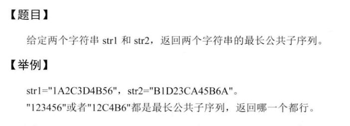
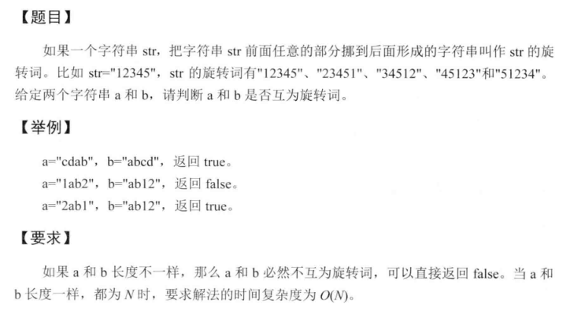

最长公共子序列

解法: 动态规划。设str1长度是m, str2长度是n, 开一个大小是dp[m+1][n+1]的二维数组，dp[0][j]和dp[i][0]分别表示第一行和第一列，全部初始化为0. dp[i][j]表示str1前i个字符和str2前j个字符组成的最长公共子序列的长度。dp[0][0]表示两个字符串都是空串的情况下最长公共子序列的长度为0.
递推公式： dp[i][j] = max(dp[i-1][j],dp[i][j-1]), dp[i][j] = max(dp[i][j],dp[i-1][j-1]+1) if(str1[i] == str2[j])
含义是： str1[i]和 str2[j] 的最长公共子序列 首先应该是 str1[i-1]与str2[j] str[i]与str2[j-1] 中较长的那个， 然后比较 str1[i]与str2[j]是否相等，如果相等，还可能是str1[i-1]str2[j-1]的长度 + 1 与当前的dp[i][j]中较大的那个。
输出找到的最长公共子序列的方法：
如果格子
dp[i][j]对应的str1[i-1] == str2[j-1]，则把这个字符放入 LCS 中，并跳入dp[i-1][j-1]中继续进行判断；如果格子
dp[i][j]对应的str1[i-1] ≠str2[j-1]，则比较dp[i-1][j]和dp[i][j-1]的值，跳入值较大的格子继续进行判断；(如果相等，说明存在多个最长的子序列)直到
i或j小于等于零为止，倒序输出 LCS 。
1 |
|
最长公共子串问题

解法：动态规划。 dp[i][j]表示以i,j结尾的str1,str2的最长子串是多少； 如果str1[i]!=str2[j],则为0，否则，str1[i] == str[2][j],dp[i][j] = dp[i-1][j-1]+1; 找到dp表中最大的值输出。
1 |
|
最小的编辑代价

解法：动态规划，dp[i][j]的值代表把str1[0…i-1]编辑成[str2[0..j-1]
的最小的代价。注意这里生成的是M+1，N+1的dp矩阵，第一行和第一列都是空字符，
用来表示全部添加或者全部删除。1
2
3
4
5
6
7
8
9
10
11
12
13
14
15
16
17
18
19
20
21
22
23
24
25
26
27
28
29
30
31
32
33
34
35
36
37
38
39
40
41
42
43
44
45
46
47
48
49
50
51
52
53
54
55
56
using namespace std;
/**
* 最小编辑代价
* @param a
* @param b
* @param ic
* @param dc
* @param rc
* @return
*/
int getMin(string a,string b,int ic,int dc,int rc){
//如果先删除在插入的代价小于直接替换的代价，那么就永远不使用直接替换
if(dc+ic<=rc){rc = dc+ic;}
int result = 0;
vector<vector<int>> dp(a.size()+1,vector<int>(b.size()+1));
//初始化第一列，把a[i]编辑成空串的代价
//要把a[i]编辑成空串只有一种方法，就是把所有的字符都删除
for(int i=0;i<=a.size();++i){
dp[i][0] = dc*i;
}
//初始化第一行，把空串编辑成b[j]的方法也只有一种，就是插入相应的字符
for(int j=1;j<=b.size();++j){
dp[0][j] = ic*j;
}
//动态规划的递推公式
for(int i=1;i<=a.size();++i){
for(int j=1;j<=b.size();++j){
dp[i][j] = min(dp[i-1][j]+dc,dp[i][j-1]+ic);
if(a[i-1] == b[j-1]){
dp[i][j] = min(dp[i][j],dp[i-1][j-1]);
}
else{
dp[i][j] = min(dp[i][j],dp[i-1][j-1]+rc);
}
}
}
//输出动态规划表
for(auto row : dp){
for(auto cow : row){
cout<<cow<<"\t";
}
cout<<endl;
}
return dp[a.size()][b.size()];
}
int main() {
string a = "ab12cd3";
string b = "abcdf";
int ic = 5; int dc = 3; int rc = 2;
std::cout << getMin(a,b,ic,dc,rc) << std::endl;
return 0;
}
字符串的交错组成

解法： 动态规划，生成M+1，N+1的dp矩阵，dp[i][j]表示aim[0,i+j-1]
能否被str1[0…i-1]和str2[0…j-1]交错组成。注意第一行和第一列都是空串。
aim[-1]表示aim为空串的时候。str1[-1],str2[-1]都表示是空串的时候。1
2
3
4
5
6
7
8
9
10
11
12
13
14
15
16
17
18
19
20
21
22
23
24
25
26
27
28
29
30
31
32
33
34
35
36
37
38
39
40
41
42
43
44
45
46
47
48
49
50
51
52
53
54
using namespace std;
/**
* 字符串的交错组成
* 判断aim能够由str1 and str2 交错组成
* @param s1
* @param s2
* @param aim
* @return
*/
bool isCom(string s1,string s2,string aim){
//先从长度判断
if(s1.size() + s2.size() != aim.size()){return false;}
vector<vector<bool>> dp(s1.size()+1,vector<bool>(s2.size()+1));
//空串可以被空串交错组成
dp[0][0] = true;
//初始化第一列
for(int i=1;i<=s1.size();++i){
if(s1[i-1] != aim[i-1]){break;}
dp[i][0] = true;
}
//初始化第一行
for(int j=1;j<s2.size();++j){
if(s2[j-1] != aim[j-1]){break;}
dp[0][j] = true;
}
for(int i=1;i<=s1.size();++i){
for(int j=1;j<=s2.size();++j){
if(s1[i-1] == aim[i+j-1] && dp[i-1][j]
|| s2[j-1] == aim[i+j-1] && dp[i][j-1]){
dp[i][j] = true;
}
}
}
//输出dp数组
for(auto i:dp){
for(auto j:i){
cout<<j<<" ";
}
cout<<endl;
}
return dp[s1.size()][s2.size()];
}
int main() {
string s1 = "ABC";
string s2 = "123";
string aim = "12AA3C";
auto result = isCom(s1,s2,aim);
cout<<result;
return 0;
}
判断两个字符串是否互为旋转词

思路： 将其中一个字符串复制一份，拼接在后面，然后在这个长字符串中查找另外一个短的有没有出现。
例如判断a,b字符串，只需要find(a,b+b)!=(b+b).end() 就是旋转词，否则就不是。1
2
##